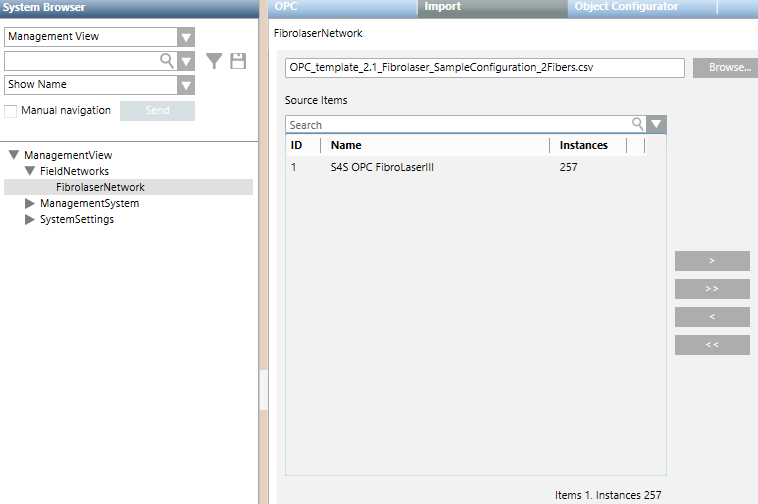
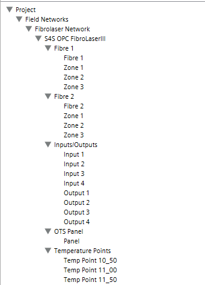

Import Configuration Data
- To speed configuration, make sure the Desigo CC Transaction Mode is set to
Simpleor the Automatic Switch of Transaction Mode is set toTrue.
The automatic switch setting is recommended. Without it, to re-enable the logs, you need to set the Transaction Mode toLoggingat the end of the configuration procedure.
- Select Project > Field Networks > [Fibrolaser OPC network].
- In the Import tab, click Browse.
- In the Open dialog box, navigate to and select the device configuration file (CSV) and click Open.
- By default, data structures are imported into Management View.
- (Optional) To check the pre-import log, click Analysis Log.
- The Analysis Log dialog box displays its outcome that you can also save in a .txt file.
- (Optional) In the Hierarchies Mapping expander, define destination in other system views of the data structures (hierarchies contained in the configuration file). The suggested field indicates the correct view root to link for each specific hierarchy. To assign each hierarchy to a destination view, proceed as follows:
a. Select the Manual Navigation check box to retain the Import tab.
b. In System Browser, select the optional view (logical view or user-defined view).
c. Drag the optional view root node from the System Browser tree to the suggested field.
NOTE: The hierarchies mapping configuration cannot be modified after the import of the configuration file. For general background information about the Desigo CC import feature and Desigo CC views, see Field Data Import and Views. - The hierarchies settings configured are activated and will be applied during the configuration import.
NOTE: If you configure the hierarchies mapping, and the [Logical Hierarchy] and [User Hierarchy] fields are not defined in the CSV configuration file, data structures will not be imported into the logical view and user-defined view. - To transfer the interfaces to import from the Source Items list to the Items to Import, click
 .
. 
- (Optional) Select the Delete unselected items from the Views check box to remove from the views—during the import—any items that are not present in the file to import.
- Click Import.
- The Import tab displays the Import in progress page.
- The Cancel button becomes available and allows you to stop the procedure at any time. In this case, a summary of the partial results is provided.
NOTE: No rollback function is available. This means that canceling the import may result in an inconsistent state of the system database. - When the import completes, the imported configuration data structures are added to System Browser under the OPC network. Each OPC server contains the related OPC groups, and each OPC group contains the related OPC items.

- (Optional) To view a summary of the import, in the Import tab, click Import Log.
- The Import Log dialog box displays its outcome that you can also save in a .txt file.